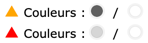
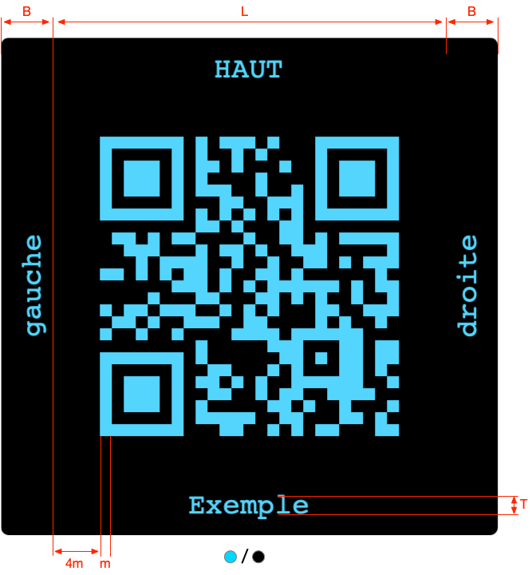

-
L : largeur du code et de la Quiet Zone qui facilite la lecture
du QR code et possède une largeur égale à 4 fois celle d'un module (plus petit
carré du QR code).
-
B : largeur de la bordure extérieure accueillant le texte ; une valeur nulle
supprime l'ajout du texte.
-
T : taille du texte inséré dans la bordure.
-
Couleurs : si le contraste entre les couleurs un triangle apparaît (rouge pour un
contraste inférieur à 4,5 et orange pour un contraste entre 4,5 et 12.

